|
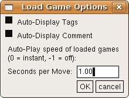 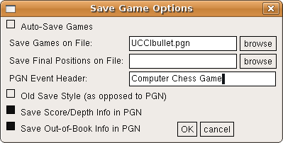 |
New dialogs through a universal dialog constructorXBoard did already have a 'universal' dialog constructor, for creating the Engine #N Settings popup based on the list of options sent by the engine. This constructor has been adapted a little to not send the user-specified settings to the engine, but set XBoard's internal options in stead. This means that dialogs now can be added with very little effort, by making a list of options containing the type (spin, check, string, combo, button), name (= text to appear with the control) and XBoard internal option it should set. This dialog constructor has been used to add Save and Load-Options dialogs similar to those WinBoard already had to XBoard. Because it is now totally trivial to add a new option to an existing dialog (just add one line in the table specifying the options), the Save-Options dialog has also be made to include the -savePositionFile. A browse button with file or path-name optionsNote that the dialog constructor now supports browse buttons next to text fields that are intended for entering a file or path name. Pressing this button summons up the file-selector dialog, and the name of the selected file will be copied to the text field on pressing OK there. There have been other small improvements in the operation of the dialogs as well, like checkboxes reacting to clicking on the accompanying text, positioning the cursor in clicked text edits, and such. |
The XBoard 'Options' main menu used to hold all items to set options, where a checkmark indicated the current stateof the option. Apart from the fact that this obviously would not work for numeric or text options, the number of options was growing so large that this became a bit of a clutter. The univeral dialog constructor was used to group the actual items sets of dialogs, which are then summoned from the Options main menu.
|
The existing items roughly came in two kinds: those that could always be used, and those that only affected behavior in ICS play. The latter were greyed-out from the menu in local modes. The generally useful options were all moved to a "General Options" dialog, except for "Ponder Next Move", which was really an engine-related option, and was already contained as a duplicat in the "Common Engine" dialog. The better capabilities of a dialog compared to a simple menu were used to allow better specification of the "Flash Moves" option: one can now actually enter the -flashRate and -flashCount settings through a spin control. The ICS-related options were all moved to an "ICS Options" dialog, which is then greyed-out as a whole in the main Options menu. The new capabilities of the dialog were exploited for adding options to set intial black and white premove texts, the ICS Alarm setting, and the text colorization in the ICS console. 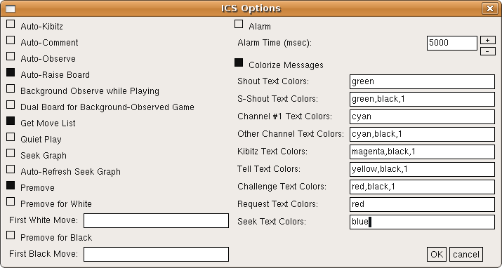 | 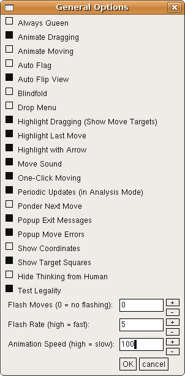 |
| 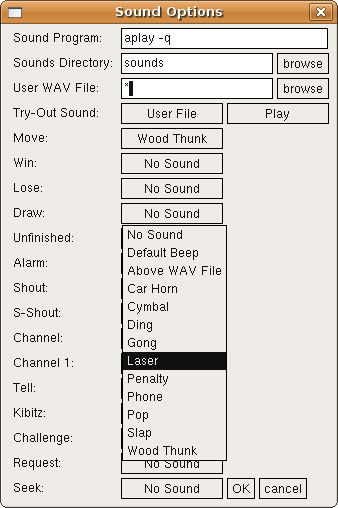 |
Sounds and XBoardThe sounds in XBoards were a bit of a neglected feature. Binary distribtions (such as Debian, Ubuntu) often did not even contain any sounds, and a normal 'make install' from source left the sound files untouched in the source directory. Configuring XBoard to use the sounds was therefore cumbersome, through many command-line options not in the least because an external sound player is needed. The new Sound Options dialog changes all that! For every event there is a combobox where you can select a standard sound (as supplied in the XBoard source package), or a user-specified file (in a text edit at the top of the dialog). A new option -soundDirectory has been added, which can also be set from the dialog, where all the standard sounds will be sought. (So if you just build XBoard and the binary is still sitting in the source directory, setting the sound directory to "sounds"makes all the WAV files with the standard sounds distributed in this subdirectory available.) An extra combobox plus a 'Play' button for trying out a sound has been incorporated in the dialog as well. It still has to be decided if in the future sound files will be shipped with XBoard, and if so, which will be included in the standard package. |
Conducting engine matches interactivelyA menu item has been added in XBoard to start an engine match. (WinBoard already had this.) Formerly this was only possible by using the -mm (-matchMode) and -mg (-matchGames) on the comamand line, and after the match XBoard would terminate automatically (possibly with an Exit popup with the match result). When a match is started from the meu, you still will get this popup, but XBoard will not terminate. To define the parameters for the match, XBoard now has a new "Match Options" dialog. Here you can set the number of games, the file to use for opening lines (-lgf = -loadGameFile) or start positions (-lpf = -loadPositionFile), and the number of game or position to use from this file (-lgi / -loadGameIndex or -lpi / -loadPositionIndex). As in the command-line option, a value of -1 for the index will specify it should increment after every game (always starting at 1), and -2 after every 2 games. The value at which the index should 'rewind' to 1 can also be given, all through spin controls. | 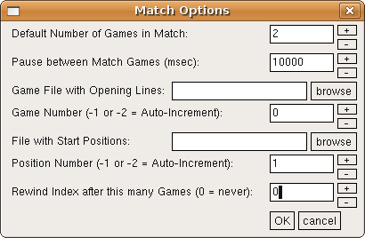 |
| 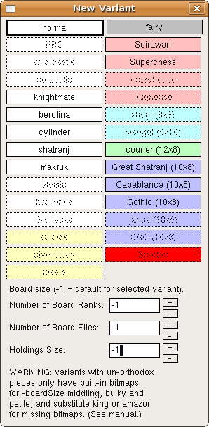 |
Redesigning existing dialogsSome of the existing dialogs (Common Engine, Adjudication Options, New Variant) have been redesigned, to simplify the XBoard code, and to make use of the new features offered by the universal dialog constructor. In this way the New Variant dialog has now be equipped with spin controls to set overrule the default board size of the selected variant, and operation has been made easier by using the variant selection button as menu items, rather than selection buttons that you have to OK afterwards. Clicking a variant now imemdiately selects it and closes the dialog. The Common Engine settings and Adjudication Options dialogs now can use spin controls rather than simple text edits for the numeric values. 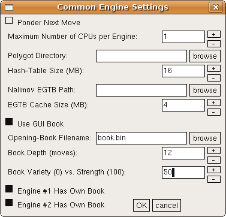 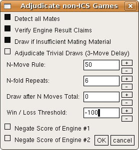 |
Selecting files of a given type onlyThe file-selection dialog of XBoard now has the capability to filter the files it displays by extension. This is useful, as typically you are only interested in *.fen or *.epd files when you are browsing for the purpose of opening a position file. Without this feature the files you are looking for would easily drawn in the background of other files. The file-selection dialog now has an extra text field where you can write one or more extensions (separated by spaces), and only filenames that contain one of these as a substring are displayed. (And directories; these are always displayed, in order to browse.) XBoard initializes this field according to what command invoked the file selector. E.g. Load Game will ask for *.pgn and *.game files, Load Position for *.fen, *.epd and *.pos files, Save Game for *.pgn or *.pos files (depending on if you have selected "old save style" or not), etc. When the file selector is invoked through a browse buttonin another dialog, it selects those files with the same extenstion as what is currently in the field that you are selecting for. Of course you can change the extension field by erasing what is there, or typing your own extensions. To have such a change take effect, you should type <Enter> while in this field. Using the mouse wheelAn experimental feature in the file browser is the use of the mouse wheel. Because of the way scroll bars work in X-applications, they are rather hard to operate if you do not have a middle mouse button. Laptops nowadays often use the right edge of the mouse touch pad as mouse wheel, however. Therefore operaton of the mouse wheel in the area of the file lists or vertical scroll bars are made to scroll these lists. Other refinements of the file-browse dialog are that double-clicking a filename counts as if you pressed 'OK', as does typing <Enter> in the filename field. Typing <Esc> there is equivaent to pressing 'cancel'. |
|
| 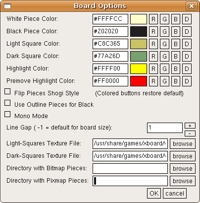 |
Configuring the board look from the menuThere also has been created a new XBoard dialog for setting the Board Options, such as square and piece colors (in the View menu). This is still in an experimental stage, and probably not fully functional, or even buggy. This is not so much because the dialog does not work, but because the XBoard code is not really designed to change these during the session, as many preparatory steps are done at startup, which have to be redone with the new option settings for the latter to take effect, and I have not yet identified them all. But in any case changing the settings, quitting XBoard, and restarting it will work, because the option changes are persistent. The color settings of the various board elements can be changed by retyping the RGB code, but it is also possible to slightly adjust the colors by spinlike buttons. Because colors form a 3-dimensional space, this cannot be done by simple '+' and '-' buttons, but requires four different adjustment directions: buttons to make the color redder, greener, bluer or whiter. Text-edits are provided to specify filenames for board texture, and the directories with alternate piece images (corresponding to the -bitmapDirectory and -pixmapDirectory command-line options). |
Sending prepared commands to an ICSThis is an attempt to equip XBoard with something similar to the WinBoard ICS context menu. The user can define a set of buttons and a set of commands to be send to the ICS when these buttons are pressed, through the -icsMenu option. The commands can be complete, such as "who" or "ptell I need a Queen!", in which case they are sent to the ICS immediately. But they can also contain the keyword $input, in which case they will be placed in the ICS Input Box, with the cursor at the place where the $input was (which is deleted). The user can then type something to complete the command, and press <Enter> to send it. E.g. "shout $input". It is also possible to let the command contain something you select with the mouse elsewhere. Usually this is an ICS handle from the ICS console. This is done by having the command contain the keyword $name, e.g. "finger $name", or "tell $name $input". You can also specify a command should not replace what is in the Input Box, but rather append to it, by having it start with $add. This can be useful for bughouse players, to quickly ask for a list of pieces. | 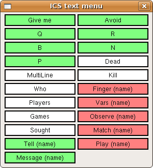 |